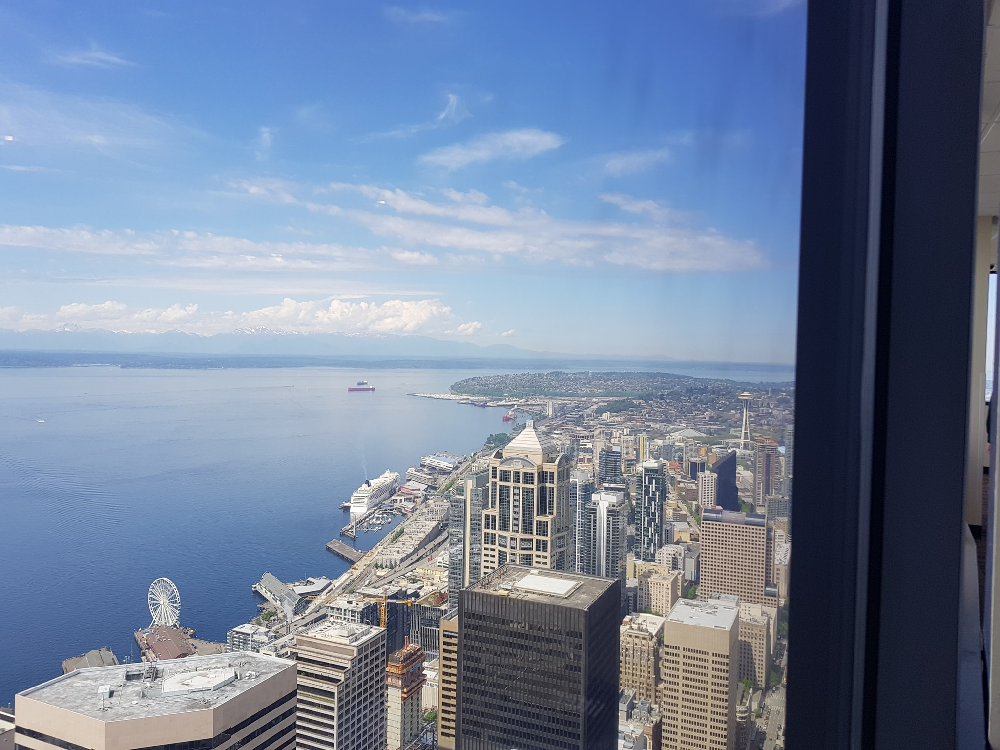

Trip to Microsoft Build - Day 3 - Meeting Motz!!
Welcome back everyone to Post 3 about my trip to Seattle and Microsoft Build. This post covers one of my favourite days at Build, Day 3 aka Sunday and the day I met James Montemagno! I have been talking to James quite a lot this past year but we have never had chance to meet.
It started with me trying to give him my NES Classic as they were sold out and he really wanted one (but he insisted on paying), then developed as my inner pedant came out and I started sending him corrections for his blog posts. I think he appreciated my attention to detail and the fact I always sent him the corrections as markdown so all he had to do was copy and paste without needing to format it in any way. In the end he created me an Editor account on his blog so I could just log in and do it myself and we have bonded ever since!
The day started off bright and early (5.30am because jetlag was still a thing) and Jim and I decided to walk the 25 minutes from his hotel to the coffee shop that James had shared on Twitter would be where he would be at for a couple of hours that morning if people wanted to meet. It was actually a glorious walk; sunny but not too warm, interesting scenery and great company!
We were about 1.5hrs early but we grabbed what turned out to be delicious coffee (if you ever visit Seattle dear reader, you need to make your way to Espresso Vivace!) and a blueberry scone each and sat down and chatted about life. Mainly how amazing Microsoft is to work for and why the things that concern me about applying for a job shouldn't concern me! Plus of course we talked code and laptops came out so we could share things and learn from each other.
I was expecting far more people to show up than they did considering it is THE James that everybody knows about in the Microsoft/Xamarin circles. But at 8am it happened, Mr Motz walked in. I was super nervous at first which seems funny now the trip is over and I have spent even more time with him (all for future posts dear reader!) but it was so easy. I guess I just have been inspired by and loved this guy for so long it was a big deal. He hugged me and we all sat down and drank coffee and talked about various things based on code and non-code.
A short while later Saqib joined us. For those of you who don't know, Saqib is the tech lead for SeeingAI that I mentioned in my last post. He is a very clever and passionate guy and I was really honoured that I got to meet him. SeeingAI is a perfect example of how much Microsoft cares about inclusion and accessibility and Saqib is the real mastermind behind this groundbreaking application.
After a couple of hours, James had to leave as he had brunch plans with some other people so Jim, Saqib and I walked back to our hotels and went off to do our own thing as we each had stuff we wanted/had to do.
James had given me some sightseeing suggestions so I did a bit of research then headed off. Step 1 was the Columbia Center and their Sky View Observatory. It is apparently the highest observatory in the Northwest of America and when I got up there I can see why!

I chose this observatory over the Space Needle for a few reasons. The main two are that it is far cheaper than a ticket to the Space Needle and it is far taller (you can see it all tiny in the middle right of the photo) so when you just want a good view and nothing fancy like a restaurant, this is perfect!
I spent quite a lot of time in the observatory just enjoying the view and looking at the little signs in there that explained what you could see. I learned the names of lots of mountains and also had my mind boggled by the location of things I have seen while driving around. Nothing feels in the right place!
I then walked to Pike Place Market. This place was really cool. Lots of people so there was a good vibe in the sun. I had a wander around the market then headed to Beecher's for the famous mac 'n' cheese! I grabbed a small pot and walked to the grass near the waterfront to enjoy it. It was quite surreal sitting by the waterfront in hot sun while looking at snowcapped mountains in the distance! But it's one of the things that makes Seattle so awesome, the wide variety of geography in the area.
The first sign-in window for Microsoft Build opened at the Washington State Convention Center (WSCC for short) at 3pm so I decided to go and queue early to try and be the first as I was the first to register for Evolve in 2016.
When I got there it turned out I was number 3 in the queue but neither of them were from the UK so I can still claim to be the first from the UK to sign-in, boom! I collected my Lanyard and free t-shirt and then headed off out.
I had looked on my phone and seen that somewhere very unique to Seattle was only a few blocks away so I set off to find it. Can you guess what that is? Nope not the Starbucks Roastery place. AMAZON GO! For those of you don't know, this is the only Amazon Go store in the world and was the kind of nerdy place I HAD to visit.
You download a special app that gives you a QR code to scan to enter then inside it is a small grocery store and you can pick things up and put them back at your will. There is no scanning items and paying at a checkout, it uses AI and technology to just know what items you picked up so that when you leave, it bills you only for the items you left with. There wasn't much choice in the shop for someone staying in a hotel room so all I bought was some water and a brioche roll for later but it was still really cool!
After that I walked back to my hotel which was quite far by this point as Amazon Go was the opposite direction from WSCC from my hotel so I enjoyed a leisurely stroll back and taking it all in. The good weather helps of course but Seattle really is a fascinating city. The buildings in Downtown are all different shapes and sizes. Lots of really tall buildings that each look different but it didn't feel like central London does, there was still wide streets and gaps where the sun could come in.
I then relaxed in my hotel room, enjoying the American TV channels and trying to adjust. I was still getting used to the time difference at this point so when it got to about 7 or 8pm I started to really feel it!
Thanks for reading the next post in my series, I hope you are enjoying it. Next post is Microsoft Build day 1 and the keynote!!!